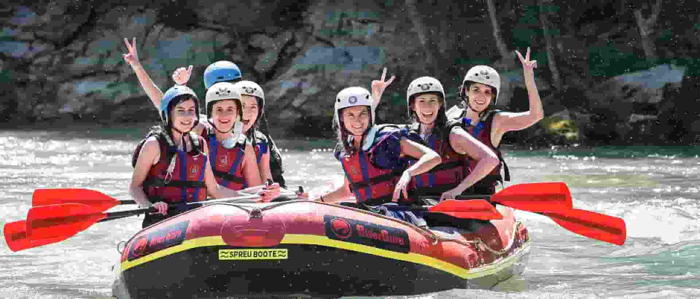

Client Experience
Experience thrilling whitewater rafting adventures with expert guides and unforgettable scenery.
Experience thrilling whitewater rafting adventures with expert guides and unforgettable scenery.
Downriver Rafting was founded in 2001 with the goal of creating safe, exciting, and memorable rafting adventures for families, thrill-seekers, and nature lovers.
Over the years, we have guided thousands of adventurers through some of the most challenging and scenic rivers in the region, always prioritizing safety and fun.
Our mission is to provide unforgettable experiences while respecting the environment and fostering a love for outdoor adventure.